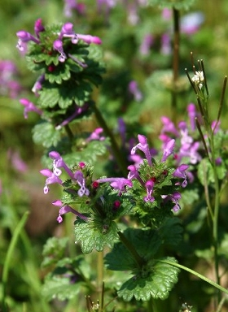

ホトケノザ
基本データ
- 日本名：ほとけのざ（仏の座）
- 科目 ：シソ科
- 学名 ：Lamium amplexicaule
| 生息地 | 道端、田畑のあぜ道 | |
| 大きさ | 10～30cm | |
| 花の咲く時期 | 3～6月月 | |
| 花の色 | 紫色 | |
| 花びらの枚数・形 | 1枚 |
春の七草のほとけのざと同じ名前だが、こちらは葉が仏の蓮華座に似ていることからついた名前の野草（雑草）。春の七草のほとけのざは、 タビラコ （田平子）のこと。

| 生息地 | 道端、田畑のあぜ道 | |
| 大きさ | 10～30cm | |
| 花の咲く時期 | 3～6月月 | |
| 花の色 | 紫色 | |
| 花びらの枚数・形 | 1枚 |